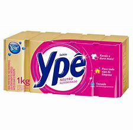

R$ 200
Este é um sabão com um ingrediente um tanto inusitado, não é mesmo? Mas é um poderoso multiuso: você pode lavar a louça, as roupas ou limpar a casa. Coloque em um balde 6 litros de água morna e dissolva, com cuidado, a soda cáustica.
Este é um sabão com um ingrediente um tanto inusitado, não é mesmo? Mas é um poderoso multiuso: você pode lavar a louça, as roupas ou limpar a casa. Coloque em um balde 6 litros de água morna e dissolva, com cuidado, a soda cáustica.